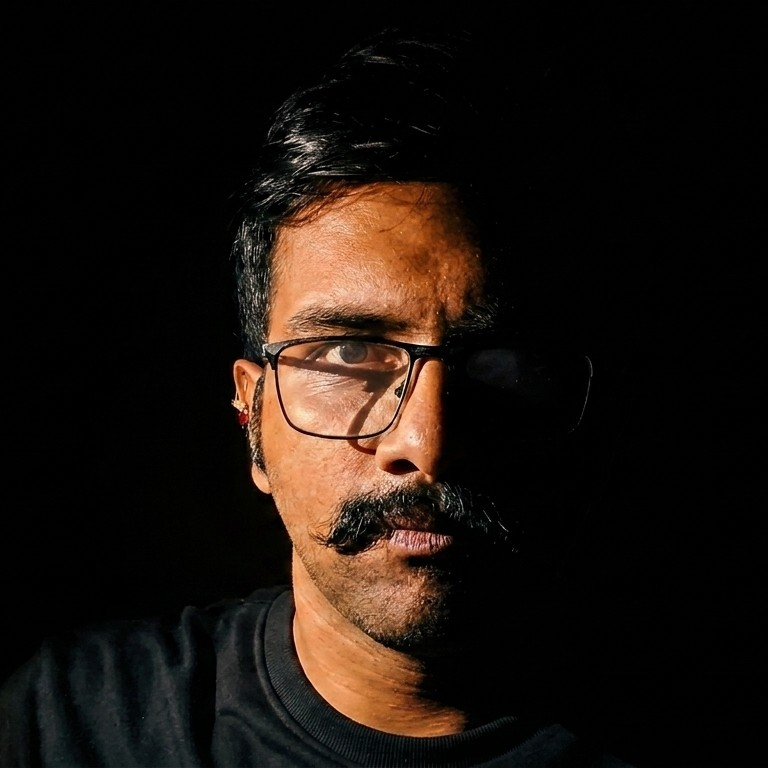

I'm a passionate creator blending innovation with purpose, crafting meaningful digital experiences. With a keen eye for detail and a drive for excellence, I transform ideas into impactful solutions. Explore my work to see creativity and precision come together.

I am a driven and detail-oriented professional with a passion for building thoughtful, user-focused solutions. With a strong foundation in my craft, I enjoy turning complex ideas into clean, effective outcomes that make a real impact. I value continuous learning and am always exploring new tools, technologies, and perspectives to refine my work. Whether working independently or collaborating with a team, I approach every project with curiosity, creativity, and a commitment to excellence. Outside of my professional pursuits, I believe in staying inspired—constantly seeking new ideas, challenges, and opportunities to grow.
Read MoreI completed my Secondary School Certificate (SSC) under the Maharashtra State Board, securing an impressive score of 85.60% in my 10th standard. This achievement reflects my strong academic foundation, discipline, and commitment to consistent performance from an early stage.
I completed my Higher Secondary Certificate (HSC) under the Maharashtra State Board, achieving 73.67%. This milestone reflects my steady academic progress and adaptability as I built a stronger foundation for my future studies and career path.
I completed my Bachelor of Science (BSc) in Computer Science from Savitribai Phule Pune University (SPPU), earning a CGPA of 8.36 with an A+ grade. This achievement highlights my strong technical foundation, analytical thinking, and dedication to excelling in the field of computer science.
Amazon Clone is a full-stack web application inspired by the core functionality and user experience of the Amazon platform. The project replicates key features such as product listings, search, user authentication, shopping cart, and a streamlined checkout process. Built with a focus on clean design and responsive performance, it demonstrates strong skills in frontend and backend development, along with an understanding of e-commerce workflows and user-centric design principles.
Network Attached Storage (NAS) System is a project focused on building a centralized and efficient data storage solution accessible over a network. It enables multiple users or devices to securely store, retrieve, and manage files from a single location, ensuring ease of access and improved data organization. The project highlights an understanding of networking concepts, file systems, and system configuration, along with an emphasis on data security, reliability, and seamless user experience.